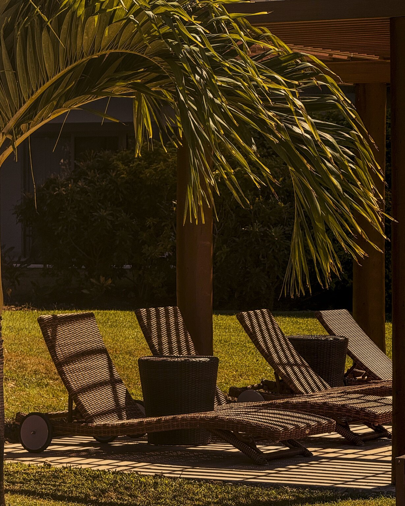

A place, made unmistakable.
A visual practice for independent hospitality properties.

Properties change. Their imagery stays in circulation.
Rooms are repainted. Restaurants change hands. A wedding lawn becomes the reason guests book. The same photographs keep defining the property online.
Before a guest experiences a place, they experience its representation.
Decide, then produce.
EXIF studies the property before deciding what should change. The answer may be visual. It may be something else.
What should become recognizable before arrival?
Start with the place itself: what it has become, what the owner sees in it and what guests actually experience.
See how the property is currently translated across its website, listings and social presence.
Look for the moments guests repeat in reviews. They often reveal what the current imagery has not learned to lead with.
Use the available signals to identify where representation may be limiting attention, understanding or conversion.
A reading of each place.

Every place arrives before we do.
Through a sequence of images, selected, ordered and repeated across websites, listings and social channels.

Visual Direction & Production
Commercial photography and film for openings, renovations, repositioning and properties ready for a current image set.
Define what the property needs to make visible, then produce the images through which it will be understood.
See how it works
A place to
start.
We look at the property before we meet, then spend 30 minutes comparing notes on what its current representation communicates and what may deserve a closer look.
You may leave with something worth changing, something worth investigating, or confirmation that what you’re doing already makes sense.
No cost. No obligation to work with EXIF.
I have a place to show you.
Already have a specific production, project or brief in mind?
Write to EXIF